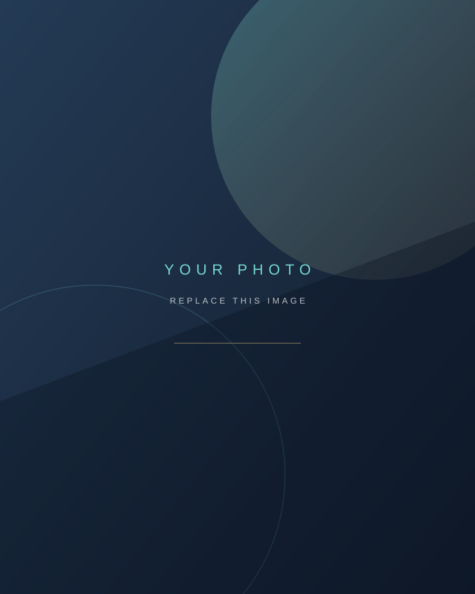

EDUCATION / CAREER
PERSONAL PORTFOLIO / ONLINE PROFILE
WELCOME TO MY PAGE
H-Rua!!H-RUA / PERSONAL PROFILE
自分の活動・好きなこと・これまでの歩みをまとめた、個人プロフィールサイトです。

PROFILE / 01YOUR NAME
01 / ABOUT
はじめまして。
私について。
02 / PROFILE
プロフィールPROFILE
名刺のように、必要な情報をひと目で。
PERSONAL DATA
YOUR NAME
肩書き・所属などを入力
NO. 001
TOKYO, JAPAN
MAKE EVERY DAY COUNT.
LICENSE / CERTIFICATE
資格・取得実績
03 / SKILLS & INTERESTS
できること・好きなことMY FIELD
今の自分をつくっているスキルと興味。
04 / BIKE LIFE
憧れを、現実に。ROAD TO REBEL
いつか乗りたいと思っていたバイクへ。
BIKE
01
01
Honda Rebel 250
05 / GAME HISTORY
PLAY / RANK / REPEATGAMING RECORD
これまでのランク実績と、今も遊んでいるタイトル。
06 / SOUNDTRACK
お気に入りの音楽SPOTIFY TOP 10
よく聴く楽曲をランキングで紹介。
07 / FIND ME
各種リンクSOCIAL & WEB
SNS・作品・活動場所はこちら。
06 / HIGHLIGHT SCENES
ハイライトギャラリーMOMENTS
今日の出来事や思い出を、写真・動画で残していきます。
DRAG / SWIPE / SCROLL TO EXPLORE
10 / GUESTBOOK
メッセージを残すSAY HELLO
感想やひとこと、お気軽にどうぞ。
THANK YOU FOR VISITING
ページの先頭へ ↑